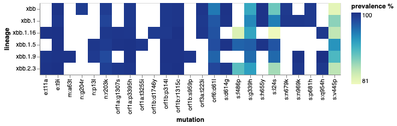

Genomic Analysis¶
The outbreak_data package has contains multiple tools that can collect the relevant genomic information on SARS-CoV-2. Using a combination of these endpoints will allow you to get the information on variants of concern (VoC) and the current mutations to conduct your own multi-level genomic analysis on SARS-CoV-2. On this page, you’ll find a few example workflows that demonstrate data manipulation and visualization steps to track the progression of SARS-CoV-2.
Here is an example workflow that allows the user to manipulate the data to find all the XBB lineages prevalent in India within a 1-year timeframe:
# Perform authentication if you haven't already
from outbreak_data import authenticate_user
authenticate_user.authenticate_new_user()
# Import outbreak_data package
from outbreak_data import outbreak_data as od
# Get the prevalence of all circulating XBB lineages in India
data = od.prevalence_by_location("IND", startswith = 'xbb')
# multiply prevalence values by 100% for scale
data['prevalence_rolling'] = data['prevalence_rolling'].apply(lambda x: x*100)
# Search for data based on date range
data = data.sort_values(by="date")
data = data.loc[data["date"].between("2020-09-12", "2022-03-31")]
## Use the visual package of your choice to create an area graph using your data
import altair as alt
# Graph of results
alt.Chart(data, title = "Lineage Prevalence in India").mark_area().encode(
x='date:T',
y=alt.Y('prevalence_rolling:Q'),
color = 'lineage:N')
date total_count lineage_count lineage prevalence \
3014 2022-09-12 0 0 xbb.1.16 0.000000
3781 2022-09-12 0 0 xbb.2.3 0.000000
2593 2022-09-12 152 2 xbb.1 0.013158
3782 2022-09-13 0 0 xbb.2.3 0.000000
3015 2022-09-13 0 0 xbb.1.16 0.000000
... ... ... ... ... ...
4086 2023-03-31 196 2 xbb.2.3.2 0.010204
3322 2023-03-31 196 29 xbb.1.16.1 0.147959
2793 2023-03-31 196 1 xbb.1 0.005102
3381 2023-03-31 196 7 xbb.1.16.2 0.035714
3981 2023-03-31 196 15 xbb.2.3 0.076531
prevalence_rolling
3014 0.000000
3781 0.000000
2593 0.003451
3782 0.000000
3015 0.000000
... ...
4086 0.031184
3322 0.144578
2793 0.014174
3381 0.045358
3981 0.084337
[985 rows x 6 columns]

Note
The Vega-Altair visualization package is used for demonstration purposes. However, any Python visual package can be used to create graphical representations of the data.
Lineage_Mutations Heatmap
A basic but important question: how do we define a lineage? What mutations consistently appear in most sequences within a lineage? We could start by plotting some of the characteristic mutations of XBB occurring in 80% of sequences. Even better, we can do this for mulitple related lineages and compare them using a heatmap:
# Collecting 15 characteristic mutations and their prevalences for each variant
lin0 = od.lineage_mutations("xbb", freq = 0.80)
lin0["lineage"] = "xbb"
lin0 = lin0.iloc[:15]
lin1 = od.lineage_mutations("xbb.1", freq = 0.80)
lin1["lineage"] = "xbb.1"
lin1 = lin1.iloc[:15]
lin2 = od.lineage_mutations("xbb.1.5", freq = 0.80)
lin2["lineage"] = "xbb.1.5"
lin2 = lin2.iloc[:15]
lin3 = od.lineage_mutations("xbb.1.16", freq = 0.80)
lin3["lineage"] = "xbb.1.16"
lin3 = lin3.iloc[:15]
lin4 = od.lineage_mutations("xbb.1.9", freq = 0.80)
lin4["lineage"] = "xbb.1.9"
lin4 = lin4.iloc[:15]
lin5 = od.lineage_mutations("xbb.2.3", freq = 0.80)
lin5["lineage"] = "xbb.2.3"
lin5 = lin5.iloc[:15]
# Link each of the findings together for plotting
df = pd.concat([lin0, lin1, lin2, lin3, lin4, lin5])
df["prevalence"] = df["prevalence"].apply(lambda x: x*100)
df= df.rename(columns={'prevalence': 'prevalence %'})
# Plot mutation heatmap
import altair as alt
alt.Chart(df).mark_rect().encode(
x = "mutation:N",
y = "lineage:N",
color = 'prevalence %:Q')
mutation mutation_count lineage_count lineage gene ref_aa alt_aa \
0 orf6:d61l 4198 4423 xbb ORF6 D L
1 s:l24s 3919 4423 xbb S L S
2 n:r203k 4378 4423 xbb N R K
3 s:g339h 4054 4423 xbb S G H
4 s:v445p 3643 4423 xbb S V P
... ... ... ... ... ... ... ...
10 orf1a:p3395h 3263 3279 xbb.2.3 ORF1a P H
11 s:n969k 3261 3279 xbb.2.3 S N K
12 orf1a:g1307s 3257 3279 xbb.2.3 ORF1a G S
13 s:d614g 3257 3279 xbb.2.3 S D G
14 s:q954h 3257 3279 xbb.2.3 S Q H
codon_num codon_end type prevalence % change_length_nt
0 61 None substitution 94.912955 None
1 24 None substitution 88.605019 None
2 203 None substitution 98.982591 None
3 339 None substitution 91.657246 None
4 445 None substitution 82.364911 None
... ... ... ... ... ...
10 3395 None substitution 99.512046 None
11 969 None substitution 99.451052 None
12 1307 None substitution 99.329064 None
13 614 None substitution 99.329064 None
14 954 None substitution 99.329064 None
[90 rows x 12 columns]
Comparing Lineages
To better understand the evolution of SARS-CoV-2, we may also want to know what mutations are shared between different viral lineages and how many shared mutations there are.
For this example we’ll look at three different lineages: B.1.1.7, P.1, and B.1.1.529. First, let’s get an idea of which mutations are shared between all three lineages:
lin1 = od.lineage_mutations("b.1.1.7")
lin1["lineage"] = "b.1.1.7"
lin2 = od.lineage_mutations("P.1")
lin2["lineage"] = "P.1"
lin3 = od.lineage_mutations("b.1.1.529")
lin3["lineage"] = "b.1.1.529"
#Finding intersections
#Created an optional but convenient intersecting function
def intersect(lst1, lst2):
return set(lst1).intersection(lst2)
a = set(lin1['mutation'])
b = set(lin2['mutation'])
c = set(lin3['mutation'])
m12 = intersect(a, b)
m13 = intersect(a, c)
m23 = intersect(b, c)
m123 = intersect(m12, c)
print('Set 1.2:', m12)
print('Set 1.3:', m13)
print('Set 2.3:' , m23)
print('Set 1.2.3:', m123)
Set 1.2: {'orf1b:p314l', 'orf8:s84l', 'orf1a:del3675/3677', 'n:r203k', 's:d614g', 's:n501y', 'n:g204r'}
Set 1.3: {'s:p681h', 'orf1b:p314l', 'orf8:s84l', 'n:r203k', 's:d614g', 'n:g204r'}
Set 2.3: {'orf1b:p314l', 's:h655y', 'orf8:s84l', 'n:r203k', 's:d614g', 'n:g204r'}
Set 1.2.3: {'orf1b:p314l', 'orf8:s84l', 'n:r203k', 's:d614g', 'n:g204r'}
Finally, we can make a visual based on our findings and create a Venn diagram of our results:
# Import libraries for venn diagram visual
from matplotlib_venn import venn3, venn3_circles
from matplotlib import pyplot as plt
# Using matplotlib_venn to make venn diagram with custom visuals
## The venn diagram package used here automatically determines the number
## of intersecting values and plots accordingly
vd3 = venn3([a, b, c], set_labels = ('Alpha/B.1.1.7', 'Gamma/P.1', 'Omicron/B.1.1.529'), set_colors=('#c4e6ff', '#F4ACB7','#9D8189'),
alpha = 0.8)
c = venn3_circles([a, b, c,], linestyle = '-.', linewidth=2, color='grey')
for text in vd3.set_labels:
text.set_fontsize(16);
for text in vd3.subset_labels:
text.set_fontsize(16)
plt.title('Number of Overlapping Mutations in 3 Variants',fontname ='Helvetica',fontweight ='bold',fontsize = 18,
pad = 30,backgroundcolor ='#cbe7e3',color ='black', style ='normal');
c[0].set_lw(7.0)
c[0].set_ls(':')
plt.show()
We can see that the graph matches the number of intersecting mutations that we previously saw, given that the venn diagram also takes into account unique values for each set.
Note
Please see the matplotlib venn diagram documentation and this article for more info on how to create these graphs.
Finding the Most Prevalent Lineages
If we wanted to determine and plot the top four most prevalent lineages in India, we can make a few queries and use a few simple commands to create a table that shows us what these lineages are:
data=od.prevalence_by_location("IND")
most_prev = data.groupby('lineage').apply(max) # Finds the lineages with the most hits
most_prev = most_prev.mask(most_prev == '').dropna(how = 'any') # Drop any unknowns
most_prev = most_prev.iloc[:4]
print(most_prev)
date total_count lineage_count lineage prevalence \
lineage
ba.2 2023-04-20 5668 1445 ba.2 0.822785
ba.2.10.1 2023-04-19 5668 93 ba.2.10.1 0.285714
bq.1.1 2023-03-27 402 7 bq.1.1 0.428571
ch.1.1 2023-02-13 119 4 ch.1.1 0.400000
prevalence_rolling
lineage
ba.2 0.677541
ba.2.10.1 0.095541
bq.1.1 0.156863
ch.1.1 0.066667
Next we’ll collect the prevalence data on each of the four lineages:
# Retrieve the official data on the prevalences of these lineages using `daily_prev()`
d1 = od.daily_prev('ba.2', "IND")
d2 = od.daily_prev('ba.2.10.1', "IND")
d3 = od.daily_prev('bq.1.1', "IND")
d4 = od.daily_prev( 'ch.1.1', "IND")
# Formatting for creating the graph
d1['lineage'] = 'ba.2'
d2['lineage'] = 'ba.2.10.1'
d3['lineage'] = 'bq.1.1'
d4['lineage'] = 'ch.1.1'
# Group together data from each lineage
data = pd.concat([d1, d2, d3, d4])
data = data.rename(columns = {'proportion': 'proportion (%)'})
#Pick a date range to analyze
data = data.sort_values(by="date")
data = data.loc[data["date"].between("2022-09-12", "2023-03-31")]
# Increase prevalence by 100%
data['proportion'] = data['proportion'].apply(lambda x: x*100)
#Graph using preferred visual package
import altair as alt
alt.Chart(data, title = "Top 4 Most Prevalent Lineages in India").mark_area().encode(
x='date:T',
y=alt.Y('proportion (%):Q'),
color = 'lineage:N')